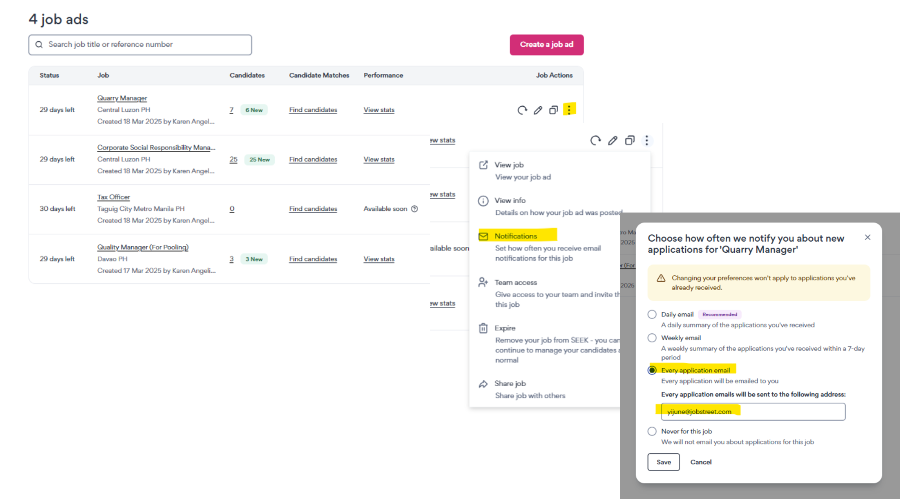
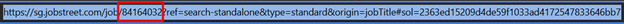

The SEEK procedure
The Network oversees posting GFP and single listings to SEEK, all of which should always be posted via FlashPost.
Whenever a customer/selling partner posts to SEEK, The Network will receive the automated FlashPost posting request at cs@the-network.com. If the request is for one of your customers, follow this process:
- Open the posting request to see for which country the listing is requested
- Click on the link to access the job listing details
- Open the SEEK platform, find the customer for whom you should post, and click on ‘Create a job ad’
- At the same time, open the SEEK listings Excel document, where we need to track all the listings posted by TNW for SEEK
- Always open this Excel document in the app and not in the browser version, as you might run into some formatting issues
- Immediately establish if this is a GFP posting or a single posting because you need to fill in the necessary information in the correct tab (GFP or Singles)
- Now, you can start posting; the initial information to provide when posting to SEEK is:
- Job title – copy and paste the job title from the FP posting request to both the SEEK platform and the SEEK listings Excel document
- Location – check the exact job listing location from the FP posting request, then fill it in the SEEK platform and note it down in the SEEK listings Excel document
- It might happen to you that the information about the location is not 100% precise (for example, it says overseas, which is currently still an option of Jobstreet/JobsDB countries); in such a case, consult with the selling partner on how to proceed (but in general, I would take the capital city of the country they are posting to if they are asking for people to relocate)
- Workplace option – this is a new mandatory information that is not yet implemented in FlashPost; until the info is provided in FP, use common sense (read through the advert) and at the same time ask the selling partner to get you that information – you can always update the listing afterwards
- Category – SEEK AI will propose to you the best match, but always verify with what was selected in the FP posting request; once chosen, copy this info into the SEEK listings Excel document
- It might happen that you cannot match the categories provided in the FP posting request; use your best judgment, or contact the selling partner for advice
- Work type – use the info from the FP posting request
- Pay type & Pay range – use the info from the FP posting request
- There is a currency exchange, and sometimes the salaries look really strange; you can always go and try to update the job you are posting to see what was originally filled in (usually that info is in EUR); you can then use OANDA to verify the conversion is correct
- For now, we do not have the option to hide salary in FP for SEEK; however, as a default, hide the salary, as in most cases, the customer does not want to show it. At the same time, though, check with the selling partner if the customer would like to have it visible, and if yes, you can update the listing afterwards
- There is an option to hide the company name (to publish anonymously), so if the customer requests this specifically, it’s possible, but under normal circumstances, you can ignore it
- Based on this initial information, SEEK’s system will now calculate the price of the advert. Now, you have to select the type of ad to use for the listing:
- First, check what credit is being used in FP/SF (you can see this information in the FP posting request)
- If this is a customized listing, then you always choose a ‘premium’ listing
- If this is a standard listing, then you need to choose another option than ‘premium’
- There is not yet a full harmonization in the platforms, so you might run into different options when posting in different countries
- Usually, the standard credit should be called ‘branded’
- If ‘branded’ is not an option, then search for ‘basic’
- Do not add any add-ons
- Before moving ahead, you need to insert the AUD price of the selected type into the SEEK listings Excel document:
- First, fill in ‘our credit type’ (which GFP package or what single type)
- Mention the selected ad type (premium, branded, basic)
- Input the AUD price (just type the price and hit enter, the formatting will add the AUD)
- Go to OANDA and exchange the AUD amount into the EUR amount
- Input the EUR amount into the file (again, just fill in the number, the EUR will be added automatically)
- The system should automatically calculate column N and O, the ‘They will invoice us AUD/EUR’ part (if not, simply do CTR+D, and the system will do the necessary)
- In case of GFP, leave the column P (PO reference) empty; in case of a single listing, fill it in
- In column Q, fill in the NET unit price of the GFP package or the single listing price (you will have to search this information in SF; you can use the C/CP reference from the FP posting request)
- Columns R and T should again automatically fill in (if not, simply do CTR+D, and the system will do the necessary)
- For GFP, leave column U as n/a; if there will be a different split than 45%, Kate will adjust it manually once the PO is created
- For Singles, you already have the PO, so if the split is different than 45%, put n/a into column R, and input the correct amount that they can invoice us in column S (with a comment on what the split is)
- Column T is only available on GFP as we have to watch if we are losing or gaining on the given listing (if the difference is minus, we are gaining, and we put it in green; if it is positive, then we are losing, and we put it in red)
- There is no difference column on singles as SEEK wants to charge us according to our POs, and not according to their variable pricing, as we do for GFP
- In the GFP tab, there is an extra column U asking if this is an upfront PO; in most cases, it is not, so say no
- Leave the rest of the columns empty as they are filled in by Kate once we receive invoices
- Once you have selected the type of ad and filled in the necessary price information in the SEEK listings Excel document, you can start with the ad creation
- Start with the Job Description tab:
- Put all the info you received in the FP posting request into there
- Simply copy and paste the different parts and put them together (you need to take every part individually, or the formatting will be broken)
- Always use this flow: description, profile, offer
- Once everything is copied, review the listing and adjust it so it looks ok
- Job summary – a mandatory field; use Chat GPT to summarize the role for you in less than 150 characters (simply copy the job description you have just put together and ask for a summary)
- Key selling points – you can ignore, it’s not mandatory
- Company brand – save the logo from the FP posting request and add it here; you can do the same with company branding if you have it
- Video – if the customer has a video link they want to include, you can use it here
- Now, you can move to the final part of the posting process:
- If the customer has an apply URL link, click on ‘my careers website’ and use the apply URL from the FP posting request
- You also have to provide an internal job reference – use the FP reference to fill this in
- If the customer has only an email apply link, then keep the default option of ‘The SEEK website and app’
- When keeping the default, you will have the opportunity to add screening questions; however, we do not communicate this to the customer for the time being, so simply deselect anything that was proposed by their AI and continue without any screening questions
- When using this option, you need to ensure that the customer receives an email with every single application, as they do NOT have access to the SEEK’s back office, and they cannot find the applications there
- To do that, you have to post the job first, then go to the job tab and click on the 3 dots at the right (next to the job), click on notification, and select every application 
- You can potentially set up an expiry date, but we usually do not have this info, so leave the default
- The last step in the SEEK posting process is to pay and post
- We will not use the pay by card payment method, so scroll a bit down and you will see the pay by invoice option, which you need to select
- Once done, you can post the ad
- Once the job is posted, you have to find the listing online and provide the URL link back to FP:
- Go to the website of the country you are posting to and search for the job
- Once you have it, go to the FP posting request and on the bottom, confirm that the listing is online and insert the URL link
- As a reference, you can use part of the link 